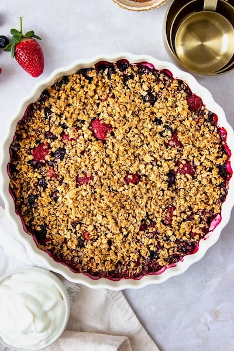

Triple Berry Crisp

Description
This Triple Berry Crisp with fresh strawberries, blueberries, and raspberries has a delicious cinnamon-oat topping,
is excellent with any combination of berries, and pairs well with this homemade whipped cream.
Ingredients
For the Filling
- 1 ½ cups sliced strawberries
- 1 ½ cups blueberries
- 1 ½ cups raspberries
- ¼ tsp cinnamon
- 1 tsp lemon zest
- 2 tsp cornstarch
- ¼ cup sugar
For the Topping
- 1 cup quick oats
- 3 tbsp light brown sugar, not packed
- ¾ tsp cinnamon
- 2 ½ tbsp melted butter
Steps
- Heat over to 375F degrees.
- Combine strawberries, blueberries, respberries, sugar, ¼ tsp cinnamon, and lemon zest in large bowl.
- Sprinkle with cornstarch. Toss until fruit is coated.
- Place fruit in an ungreased pie dish.
- Mix remaining topping ingredients in a medium bowl and sprinkle over fruit.
- Bake about 40 minutes or until topping is golden brown and fruit is tender.